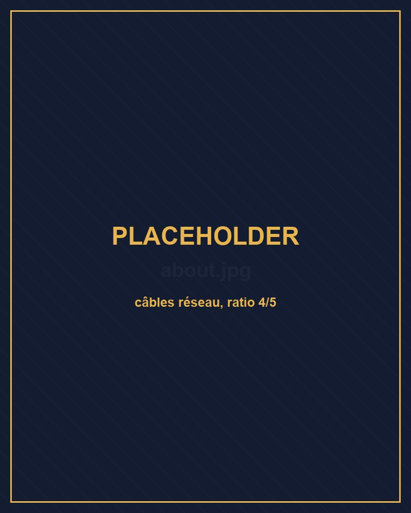
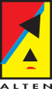
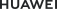
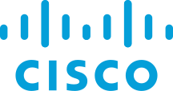
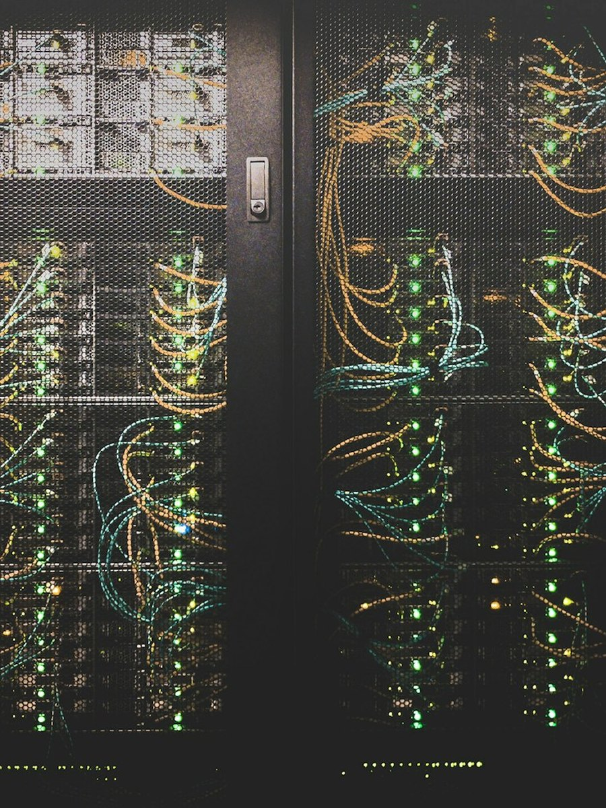

Technicien Réseaux & Sécurité
Bonjour,
je suis Mohamed Biagui
Technicien réseaux & télécoms en transition vers un profil DevSecOps / Security Engineer. Épine dorsale Blue Team (SOC, IDS/IPS, durcissement) complétée par un pilier DevOps & Cloud. Certifié Fortinet, Huawei et Cisco, je conçois, déploie et automatise des infrastructures sécurisées de bout en bout.
$ whoami mohamed.biagui — réseaux · sécurité · devsecops $ cat focus.txt Blue Team (SOC/IDS) + DevOps & Cloud $ status --disponibilite [OK] disponible pour une nouvelle mission
16+
Mois d'expérience terrain
4
Certifications
11+
Projets réalisés
5
Domaines de compétence
À propos de moi
Du réseau à la sécurité automatisée
Technicien réseaux & télécoms, rapidement identifié pour la qualité de mon travail et ma rigueur. Je suis aujourd'hui en transition vers un profil DevSecOps / Security Engineer : une épine dorsale Blue Team (SOC, IDS/IPS, durcissement) complétée par un pilier DevOps & Cloud. Je conçois, déploie et automatise des infrastructures sécurisées de bout en bout.
- Keur Massar, Dakar — Sénégal
- +221 77 295 90 10
- mohamedbiagui15@gmail.com
- GitLab : offxmh

Langues
-
FRFrançais Courant
-
GBAnglais Intermédiaire avancé
-
ESEspagnol Intermédiaire
Qualités
Compétences
DevOps, Cloud & Supervision
Réseaux & Télécoms
Pare-feu & VPN
Sécurité Offensive (Labo)
Développement
Expérience professionnelle
-

PromotionConsultant Support FAI N2 — Référent Cas Complexes FTTH
- Prise de fonction après 4 mois : promu au traitement des cas complexes FTTH en reconnaissance de la qualité du travail et de la montée en compétence rapide.
- Référent technique sur les incidents FTTH les plus complexes : raccordement, signal optique, synchronisation, diagnostics de bout en bout.
- Traitement en autonomie des dossiers à forte criticité, fort taux de résolution, respect strict des SLA.
- Rédaction de comptes-rendus techniques détaillés et retours d'expérience sur les cas récurrents.
-
Consultant Support FAI — Niveau 2
- Support technique niveau 2 sur l'ensemble des services FAI de Bouygues Telecom, en environnement de production exigeant.
- Diagnostic approfondi et résolution des incidents réseau et télécom escaladés par le niveau 1.
- Gestion complète du cycle de vie des incidents — qualification, traitement, suivi, clôture — dans le respect des SLA.
- Contribution continue à la qualité et à la fiabilité des services délivrés aux clients.
-
Stagiaire — Pôle Infrastructure
Rotation sur les quatre bureaux du pôle :
Réseaux
VPN inter-sites OpenVPN, étude comparative IPSec/L2TP/PPTP, architecture VLAN/DHCP/NAT/DNS/Radius, pare-feu pfSense documentée.
Systèmes
Déploiement et administration de serveurs Ubuntu, IDS Snort avec règles personnalisées, logs centralisés via Security Onion.
Télécoms
Centre d'appels interne sous Asterisk/FreePBX : téléphones IP, routage SIP, files d'attente, QoS.
Maintenance
Diagnostic, maintenance préventive/corrective du parc réseau, suivi et documentation des interventions.
Projets
Projet phare
2026
Plateforme convergente SOC/NOC
Mémoire de fin d'études · Licence pro ESMT — stage SIMEN
- Chaîne complète : détection → enrichissement → orchestration/réponse → supervision → chasse aux menaces → ticketing.
- Étude comparative argumentée (Wazuh natif vs suite ELK), méthodologie MITRE ATT&CK et cycle NIST SP 800-61.
- Laboratoire virtualisé et isolé, segmenté en 3 zones, approche 100 % open source.
Projet phare
CyberGuard AI
Plateforme SOC autonome
- Détection d'anomalies réseau en temps réel via Machine Learning (Isolation Forest) sur capture de trafic Scapy.
- Réponse active automatisée : blocage des IP malveillantes via iptables, journalisation et corrélation des événements.
- Dashboard glassmorphism (Flask/Apache) — script d'installation modulaire de plus de 2 400 lignes.
Solution métier
MediRecord
Gestion hospitalière + pipeline CI/CD
- Système multi-rôles (admin, médecin par spécialité, patient, comptable, pharmacien) avec authentification et gestion des dossiers patients.
- Pipeline CI/CD complet : GitLab CI, conteneurisation Docker, reverse-proxy Nginx.
- Automatisation n8n et exposition via Cloudflare Tunnel.
Solution métier
MoneyCall
Call Center IVR de transfert d'argent
- Centre d'appels vocal : 25 agents SIP répartis sur 5 files d'attente, 9 scripts AGI.
- 71 messages vocaux générés par synthèse Piper TTS.
- Interface admin sécurisée : 2FA, RBAC, journalisation d'audit, dashboard temps réel.
IDS Snort + Security Onion
Détection d'intrusion complète : règles personnalisées, centralisation et corrélation des logs, reporting des alertes.
SSI — Sécurité Wireless & Mobile
CEHv9 M14-15 : scénarios Evil Twin, SMiShing, QR code, phishing. Analyses Wireshark/Nmap, MobSF sur APK vulnérable (Kali Linux).
Call Center ToIP — DPTIC
Centre d'appels interne sous Asterisk 20 : 5 files d'attente IVR, tableau de bord web PHP/MariaDB, démon de messagerie vocale sous systemd.
Infrastructure réseau & labo GNS3
Architectures VLAN, DHCP, NAT, DNS, Radius et pare-feu ; laboratoires GNS3 multi-routeurs, liaisons WAN et services sécurisés (SSH, FTP, Telnet).
Réseau Wi-Fi — déploiement campus
Points d'accès à l'échelle d'un campus : optimisation du signal, sécurisation WPA2/WPA3 et authentification Radius.
Automatisations & scripting
Scripts Bash modulaires d'installation/configuration et programmation réseau Python (Scapy, Paramiko) pour l'automatisation et les tests.
AgriConnect
Plateforme web full-stack pour agriculteurs sénégalais — gestion par rôles (fournisseur, transporteur, coopérative), upload photo diagnostic.
Formation
- Licence en Cybersécurité — 2ᵉ année (en cours) UN-CHK · Depuis 2024
- Licence L3 — Administration Système & Réseaux (en cours) ESMT · Dakar
- DTS — Réseaux & Télécommunications ESP · 2023 – 2025
- Baccalauréat S2 — Sciences Expérimentales Lycée Seydina Limamoulaye · 2023
Certifications
-

Communication de données et réseaux Huawei ICT Academy · 2024 -

Networking Devices and Initial Configuration Cisco Networking Academy · 2025 -
 Fortinet Certified Associate (FCA)
FCF + NSE 1/2/3 Operator · 2026 → 2028
Fortinet Certified Associate (FCA)
FCF + NSE 1/2/3 Operator · 2026 → 2028
-
 Excel Avancé
Itte Consulting · Formation professionnelle
Excel Avancé
Itte Consulting · Formation professionnelle
- En cours Splunk / SOC Cisco NetAcad · en cours

« De l'apprentissage constant vers l'excellence. »
Un projet réseau, sécurité ou DevSecOps en tête ?
Disponible pour des missions de support, d'infrastructure, de sécurisation ou d'automatisation — parlons-en.